地政学
メッカはサウジ国家の宗教的正統性を支え、イスラム世界との関係、巡礼外交、入域管理、紅海側の交通を都市運営に結びます。聖地の安全と尊厳は国内政治と国際的信頼を同時に左右し、危機対応の精度も問われます。

🇸🇦 サウジアラビア / ヒジャーズ地方 / World City Atlas
イスラムの最重要聖地であるメッカは、山間の谷、巨大な巡礼インフラ、宿泊と交通の経済、多国籍の労働、住民の日常、厳しい暑熱が一つの都市運営として結びつく場所です。
都市の骨格
メッカは宗教的中心であると同時に、巡礼者の滞在、移動、医療、安全、清掃、宿泊を巨大な規模で動かす生活都市です。聖地の尊厳は、行政、労働、交通、住民の調整によって毎日保たれています。
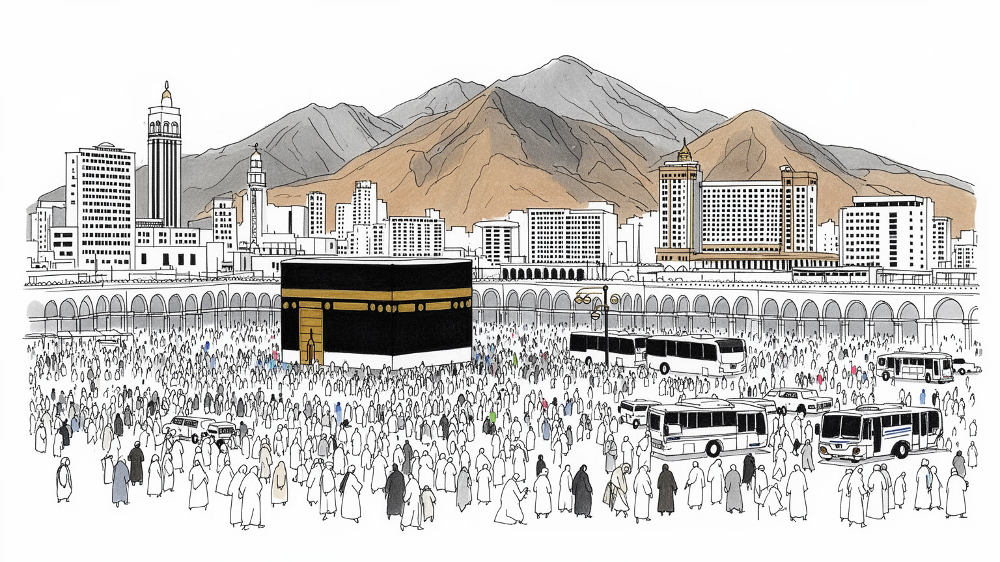
メッカはサウジ国家の宗教的正統性を支え、イスラム世界との関係、巡礼外交、入域管理、紅海側の交通を都市運営に結びます。聖地の安全と尊厳は国内政治と国際的信頼を同時に左右し、危機対応の精度も問われます。
宿泊、交通、飲食、小売、清掃、警備、建設が巡礼期に膨らみ、移民労働者と地元住民が都市を動かします。季節需要を平時の雇用へつなぐ力と、暑熱下の休憩、宿舎、医療、賃金への公平な配慮もより強く問われます。
タワーフ、サアイ、礼拝、朗誦、宗教教育を通じ、世界のムスリムが同じ方向を向きます。言語、食、服装の違いは消えず、敬意ある作法の中で一時的な共同体をつくり、記憶は故郷の家族の語りへ深く静かに戻ります。
住民の暮らしは巡礼者の波と重なり、家賃、商店、学校、病院、道路、暑熱対策が季節で変わります。市場、食堂、家族の送迎、近隣の助け合いが、聖地を生活都市として支え、日々の買い物や通院にも色濃く表れます。
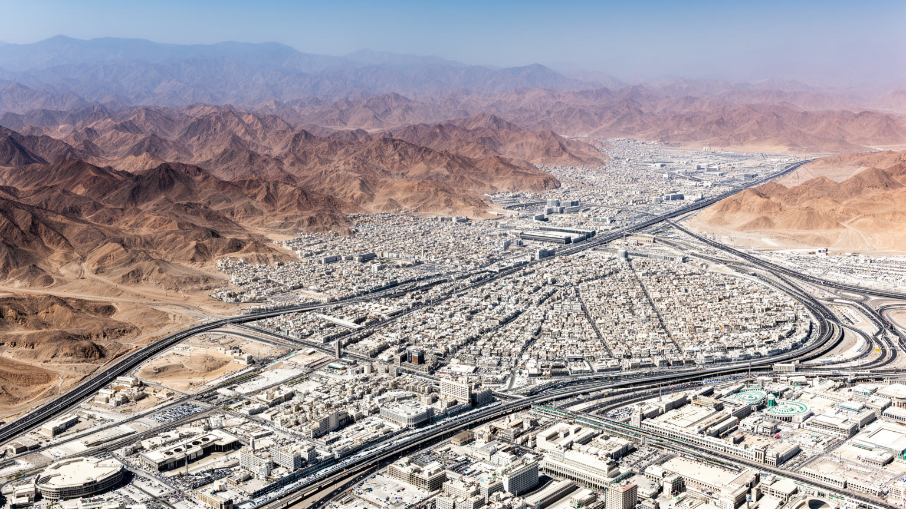
メッカは紅海沿岸のジッダから内陸へ入ったヒジャーズの山地にあり、岩山に囲まれた谷の形が街路、住宅、ホテル、バス動線を決めています。平坦な大都市のように四方へ広がれないため、中心部は高層化し、斜面には住宅地が張りつき、トンネルと高架道路が谷を縫います。巡礼者が夜明け前に宿を出る時、山風は乾いていても、昼には白い大理石と舗装が熱を返します。ワジの低地では短い雨でも排水が課題になり、坂の上の住民は買い物や通学で車や送迎に頼りやすくなります。岩山は聖地の輪郭を厳かに見せますが、救急搬送、避難、建設費、公共交通の冗長性を左右する実務的な条件でもあります。山腹の家、谷底の市場、中心のホテルを同じ地図に置くと、メッカは信仰の目的地であるだけでなく、限られた地形に暮らしと巡礼を詰め込む都市として見えてきます。 谷の狭さは音の届き方にも影響し、礼拝呼びかけ、バスのエンジン、工事の響き、群衆の足音が斜面に反射します。市場の匂い、冷房の排気、砂塵を含む熱気も谷筋にたまりやすく、地形は視覚だけでなく身体感覚で感じられます。新しい道路や宿泊施設を造るたびに、住民の生活圏と巡礼者の流れをどう重ねるかが問われます。山を削る開発は近道を生みますが、景観、記憶、災害時の逃げ道を同時に変えていきます。坂道の疲れも都市経験です。
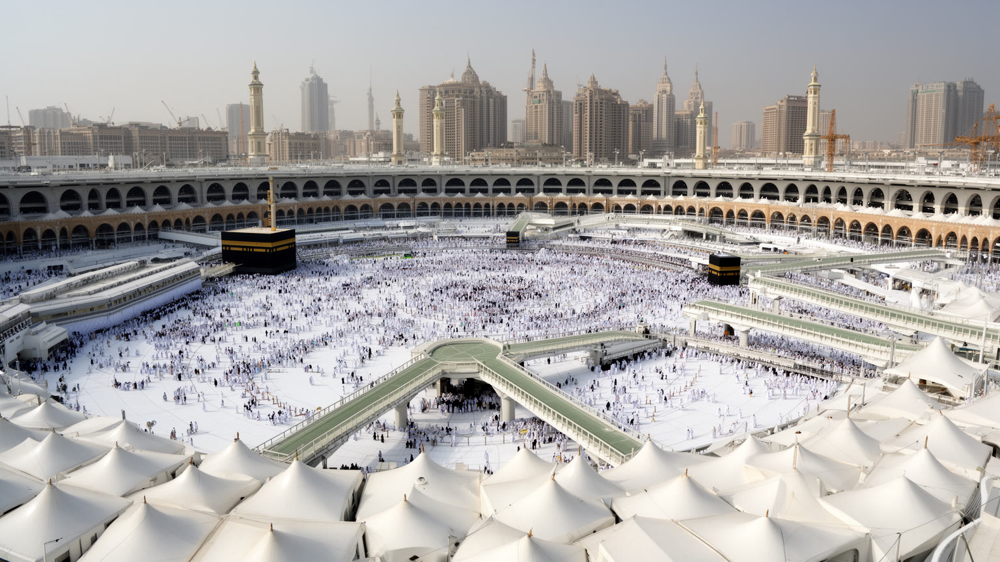
メッカの都市機能を最も強く特徴づけるのは、ハッジとウムラの巡礼者を安全に受け止めるインフラです。大巡礼の数日間には、世界各地の人びとがミナー、アラファト、ムズダリファ、聖域、宿泊地区を決められた順に移動し、祈り、休息、食事、医療、通信、給水を必要とします。バス、鉄道、歩行者導線、日陰、空調された待機所、救急拠点、許可管理は、宗教行為を支える都市装置です。タワーフやサアイでは歩く身体そのものが儀礼になり、足の痛み、汗、ザムザム水での一息、家族の手を握る動作までが都市の流れに含まれます。高齢者、子ども、車いす利用者、持病のある人、言語に不安のある人をどう支えるかは、施設の大きさ以上に重要です。係員、通訳、休憩所、迷子対応、医療スタッフの配置が、混雑を単なる数の問題ではなく、人の尊厳を守る運営に変えています。 巡礼の準備はハッジの数日だけでなく一年を通じて続き、許可、宿泊枠、バスの時間、救急車の待機、清掃班の交代、食事の配布が細かく組まれます。群衆を速く動かすだけではなく、遅く歩く人を待てる余裕、家族を再会させる仕組み、疲れた人が座れる場所が、安全を具体的にしています。ラマダンのウムラやイード前後の移動も含め、都市は季節ごとに別の混み方を読み替えます。小さな案内の改善も命と信頼を守り続けます。
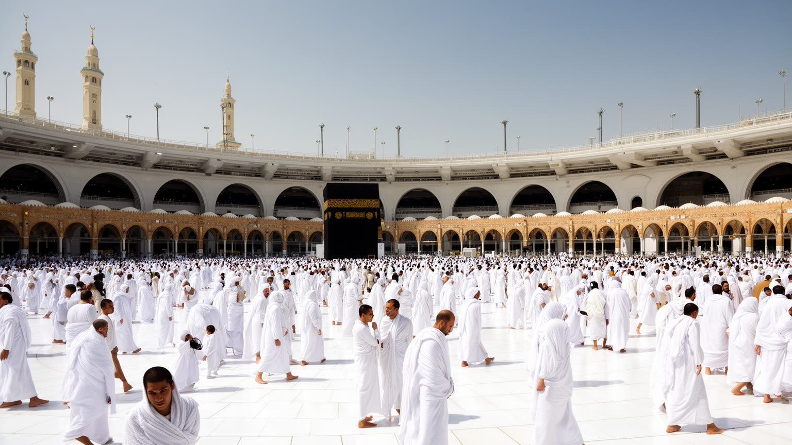
メッカの文化は、単一の民族文化ではなく、世界のムスリムが同じ方向へ祈る経験の重なりとして現れます。聖域ではタワーフの円環、サアイの往復、礼拝の列が身体のリズムをつくり、歩幅、沈黙、涙、疲労、家族を待つ視線が一つの空間に集まります。礼拝の呼びかけが谷に響き、クルアーン朗誦はホテルの部屋、宗教教育の場、説教、放送、スマートフォンの配信を通じて都市の時間を整えます。巡礼者はアラビア語、ウルドゥー語、インドネシア語、トルコ語、英語などを持ち込み、食堂やバス乗り場では多言語の案内と短い助け合いが生まれます。宗教的敬意が強く求められる場所であり、写真、服装、声の大きさ、移動の作法にも慎重さが必要です。ここでの経験は見物ではなく、故郷の家族や地域社会へ持ち帰られる学びと記憶です。 説教や宗教番組、ライブ配信、巡礼案内の動画は、メッカの経験を都市の外へ広げますが、現場では画面よりも声、足元、隣人との距離が強く残ります。子どもに礼拝の作法を教える親、朗誦を聞きながら休む高齢者、初めての儀礼に緊張する若者が同じ時間にいます。宗教教育は教室だけでなく、宿の廊下、家族の会話、説教後の沈黙にも広がります。音を聞く姿勢や列の作り方にも、学びは静かに表れます。声を低くする配慮も、聖域の作法として身についていきます。
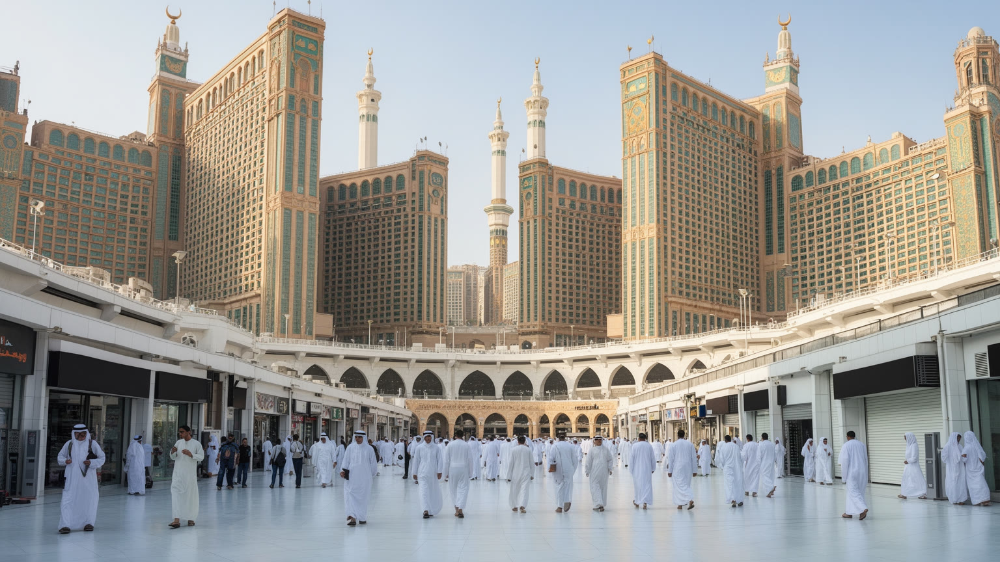
メッカの経済は石油都市とは性格が異なり、巡礼と滞在を支えるサービスの厚みに強く依存しています。中心部の高層ホテル、郊外の宿泊施設、短期滞在向けの部屋、レストラン、土産物店、交通事業、清掃、警備、医療、両替、通信、旅行会社は、ハッジ、ラマダン、イード、年間のウムラに合わせて人員と在庫を動かします。モールでは冷房の下で礼拝用品、衣類、香料、通信機器、菓子が売られ、古いスークや露店では値段交渉、袋詰め、家族への土産選びも進みます。大きなホテルほど利便性を高めますが、低所得の巡礼者には宿泊費が重くなり、小さな宿や商店はオンライン予約と団体旅行の条件に揺さぶられます。厨房、洗濯、客室清掃、廃棄物回収、バス整備、倉庫管理、荷物運搬は、祈りの旅を裏側で支える仕事です。都市の収入を読む時には、売上だけでなく、誰が繁忙期のリスクと疲労を引き受けるのかを見る必要があります。 買い物は消費だけでなく、故郷へ祈りの記憶を持ち帰る行為でもあります。デーツ、香水、礼拝マット、衣類、小さな贈り物は、家族や近隣へ配られます。価格の上昇、店舗の入れ替わり、家賃の高さは住民の日常にも響き、巡礼産業が生む富の分配も問い直されます。露店の短い声かけにも、都市の季節労働が凝縮しています。袋を提げる手にも旅の実感が確かにあります。
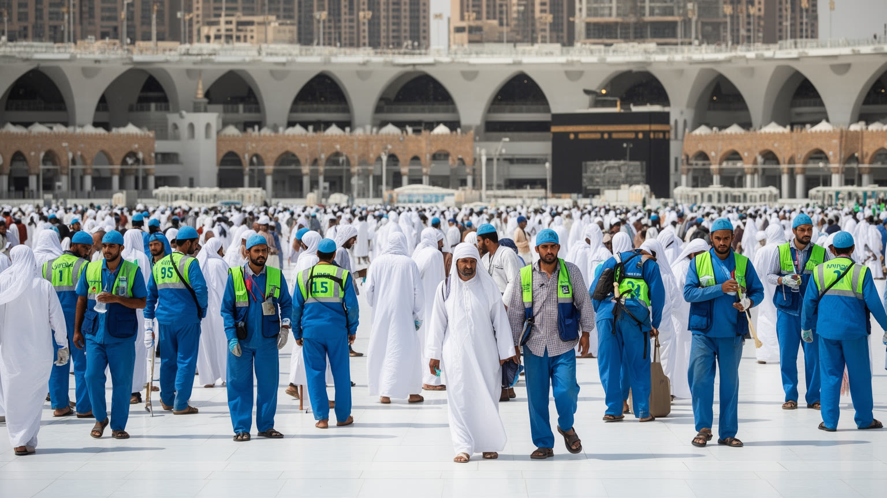
メッカの日常は、地元住民だけでなく、南アジア、東南アジア、アフリカ、アラブ諸国などから来た多様な労働者に支えられています。ホテルの客室係、建設作業員、運転手、警備員、清掃員、調理スタッフ、小売店員、医療補助の人びとは、巡礼者の視界に短く入るだけでも、都市機能の基礎を担っています。早朝の厨房で米を炊く人、夜遅くまで床を磨く人、猛暑の車寄せでバスを誘導する人、車いすを押す係員がいなければ、聖地の秩序は保てません。宗教的な目的地で働くことは誇りを与える場合もありますが、低賃金、長時間労働、暑熱下の作業、狭い宿舎、言語の壁、雇用主との力関係は深刻な課題になりえます。送金は労働者の故郷の家計を支え、繁忙期の疲労は遠い家族の生活にもつながります。聖地の尊厳を語る時には、安全教育、休憩、医療、通訳、宿舎の質を都市の中心課題として扱う必要があります。 巡礼者と労働者が同じ信仰を持つ場合でも、移動の自由、滞在条件、休める時間には差があります。制服の人に道を尋ね、食堂で注文を受け、部屋を整えてもらう一つひとつの場面に、都市の階層が表れます。見えにくい労働を尊重することは、聖地の倫理そのものに関わります。繁忙期の声の枯れ、靴底の減り、休憩室の狭さも都市の記録です。契約の透明さも信頼を支え、休息の質も大切です。
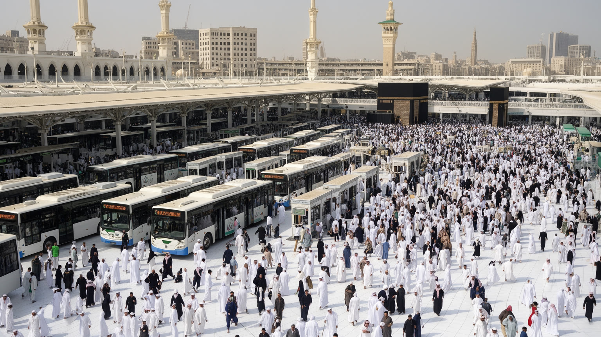
メッカでは交通は単なる移動手段ではなく、群衆の安全を左右する都市の中枢です。巡礼者はホテル、聖域、ミナー、アラファト、ムズダリファ、駅、バスターミナルを限られた時間に移動し、歩行者、車両、警備、救急、清掃の動線が重なります。バスのエンジン音、メトロの到着音、係員の笛、多言語の案内、礼拝呼びかけの声が混じる中で、人びとは列を作り、立ち止まり、再び歩き出します。道路一本の閉鎖やバスの遅れは、疲労、熱中症、迷子、混雑の連鎖につながるため、交通計画は儀礼の時間割と一体で組まれます。スマートフォンの案内や電子許可は便利ですが、通信障害やデジタルに不慣れな人への備えも欠かせません。子どもを連れた家族、高齢者、車いす利用者、団体から離れた人は、同じ混雑をより重く経験します。休憩地点、日陰、水、トイレ、段差の少ない導線、現場の係員の判断が、疲れた人を次の場所へ進ませます。 群衆交通では平均的な歩行速度だけを前提にできません。足を痛めた人、眠い子ども、母語で案内を読めない人、薬を飲む時間を気にする人がいます。待機列の曲がり方、壁際の余白、車いすの回転幅、給水の位置までが安全に関わり、細部が都市への信頼を作ります。夜の涼しい時間帯にも、疲労は確実に蓄積します。交通の音量管理も安心に関わり、夜の休息も守ります。
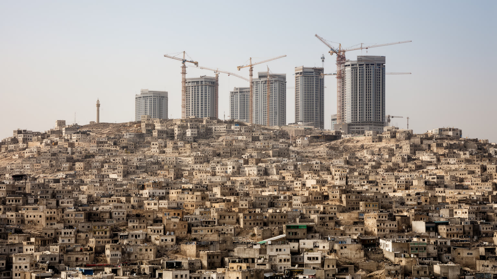
メッカは世界中のムスリムにとって特別な目的地ですが、同時に学校、病院、住宅地、商店、通勤、家族生活を持つ住民の都市でもあります。巡礼者の流入は商売の機会を生む一方、道路混雑、家賃上昇、騒音、公共空間の過密をもたらします。中心部の再開発やホテル建設は雇用と収入を生みますが、古い街区の解体や移転により、近隣関係や家族の記憶が薄れることもあります。子どもの通学、祖父母の通院、親族の訪問、障害のある家族の移動は、混雑や坂道、暑さの影響を強く受けます。若者にとっては宗教都市としての誇りと、教育、娯楽、就業機会を求める期待が重なります。地域の食堂、学校行事、親族の集まり、近所の小商いは、巡礼者の波の裏で続く静かな都市のリズムです。高層ホテルの足元で働く人がどこに住み、子どもがどの学校へ通うのかを見れば、再開発は建物の更新ではなく生活圏の組み替えだと分かります。 ラマダンやイードの季節には、家庭の食事、親族訪問、買い物、贈り物の準備が街の混雑と重なります。住民は巡礼者を迎える側でありながら、日用品を買い、子どもを迎えに行き、高齢の親を病院へ連れていく生活者でもあります。保存すべきものは建物だけでなく、路地の記憶と近所の関係です。公共交通の改善は、住民の毎日にも効いてきます。静かな住宅地も聖地の一部です。
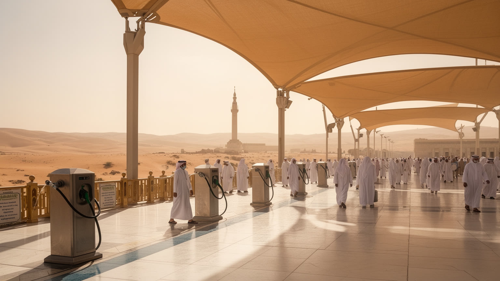
メッカの気候は都市運営に直接影響します。夏の暑熱は非常に厳しく、巡礼者、屋外労働者、高齢者、持病を持つ人にとって熱中症は重大なリスクになります。乾いた空気、強い日射、砂塵、限られた降雨は、水の供給、冷房、日陰、舗装の熱、廃棄物管理を都市の基本課題にします。大巡礼はイスラム暦に従うため、年によって季節が移り、猛暑期に重なる時期には対策の重みが増します。白い大理石の照り返し、素足に近い感覚で伝わる床の冷たさ、夜に谷へ下りる山風、ミストの湿り気は、巡礼者の記憶に残る感覚です。散水、日よけ、冷房された休憩施設、救急拠点、医療スタッフの配置は、信仰行為を安全に続けるためのインフラです。ホテルの冷房と路上の待機列では同じ気温でも負担が違います。水場、ザムザム水へのアクセス、屋根、夜間作業の調整は、景観以上に命を守る都市設計です。 暑さは体力差をはっきりさせます。若い人には耐えられる距離でも、高齢者、子ども、妊娠中の人、持病のある人には長い負担になります。医療統計、救急出動、休憩所の利用、清掃員や警備員の勤務記録を次の運営に反映することで、気候への備えは毎年更新される知識になります。水を飲む声かけも、宗教都市の大切な公共サービスです。猛暑への配慮は信仰の平等性にも関わり、夜の移動計画も重要な課題です。
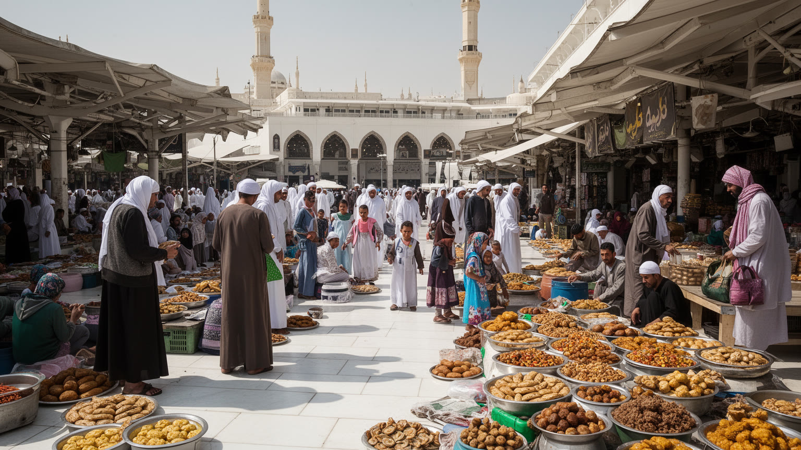
メッカの日常は、聖域の周辺だけでなく、食堂、市場、宿の厨房、家族の食卓、巡礼者向けの弁当、夜の買い物にも表れます。デーツとアラビアコーヒー、カブサ、マンディ、羊肉、香辛料、紅海側から入る食材に加え、南アジア、東南アジア、アフリカ、トルコ、アラブ各地の味が宿泊地区と商店街に並びます。巡礼者は慣れた食を探し、同郷者と食卓を囲み、歩き疲れた身体を温かい料理と水で整えます。ラマダンの夜は食堂、菓子店、露店、モールが遅くまで動き、イードの前には衣類、香料、贈り物を買う家族で市場が濃くなります。住民にとって市場と食堂は、季節の混雑を読みながら家族の食事を支える生活の場所です。ホテルの厨房、配膳、食材配送、廃棄物回収は巡礼経済の重要な労働でもあります。食は名物探しだけでなく、誰が仕込み、運び、分け合い、持ち帰るのかを見ることで、信仰の旅を身体のケアとして理解させます。 混雑する食堂で席を譲ること、宿で知らない人に水を渡すこと、店主が片言の言葉で注文を聞くことは、巡礼都市の親密な公共性を作ります。香辛料、コーヒー、焼けた肉、冷房の風、湿った紙袋の手触りは、祈りの記憶と一緒に残る生活の感覚です。食卓は国境を越えた巡礼者を、短い時間だけ同じ家族のようにします。子どもの菓子選びも市場を明るくし、余韻を残します。
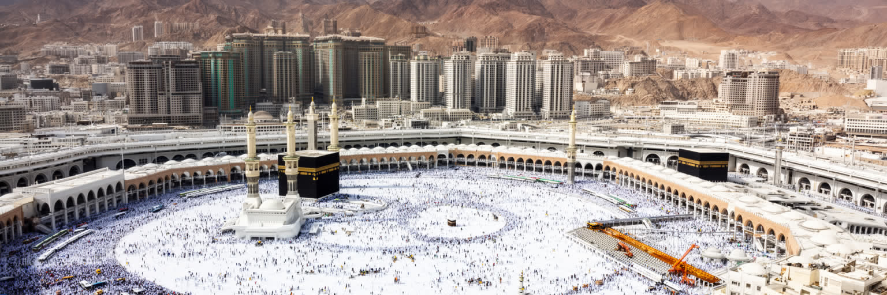
メッカを理解するには、聖地としての唯一性だけでなく、その唯一性を毎日支える都市の仕組みを見る必要があります。山間の谷、厳しい暑熱、タワーフとサアイの身体性、礼拝呼びかけと朗誦の音、ハッジとラマダンの季節、宿泊経済、多国籍労働、再開発、入域管理、住民生活は互いに切り離せません。世界のムスリムにとってメッカは祈りの方向であり、人生の旅の目的地ですが、到着した瞬間から道路、宿、食堂、医療、清掃、案内、通信、交通の網の中で過ごします。都市がうまく機能している時ほど、その支えは目立ちません。ですが、混雑、暑さ、費用、言語の壁、体力の差、所得の差は、信仰の経験にも影響します。無事に帰る人の安心、住民の生活の持続、労働者の健康、歴史記憶への配慮がそろって初めて、聖地を支える都市としての力が見えてきます。聖なる空間を消費的に眺めるのではなく、訪れる人、暮らす人、働く人の尊厳を同時に考えることで、メッカは象徴を越えて生きた都市として読めます。 祈りの静けさと巨大な運営の緊張が同じ場所にあることが、メッカの奥行きです。ホテルの高さや来訪者数だけでは、ザムザム水を分ける手、子どもを抱く腕、夜の市場で土産を選ぶ家族、清掃員の足取り、朗誦を聞く沈黙までは測れません。その細部が都市の敬意を形にします。そこに読む価値があります。